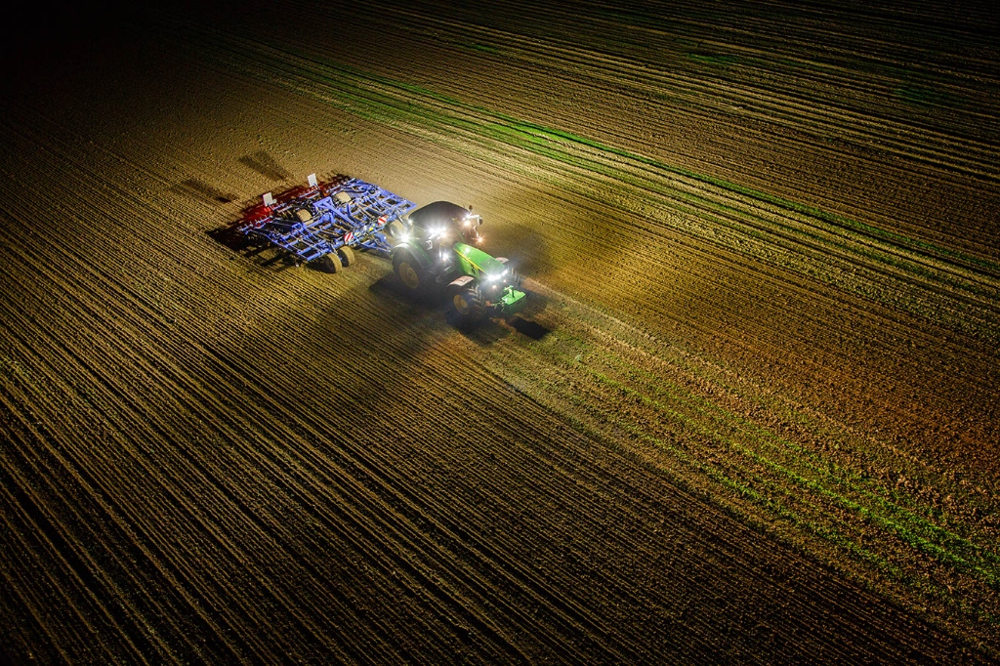
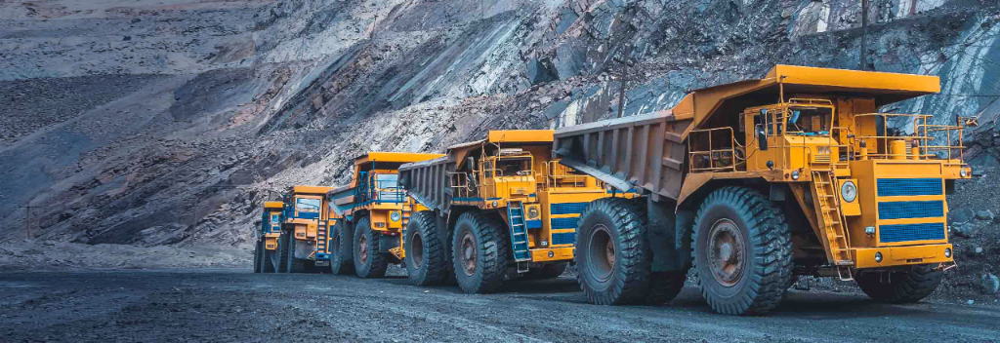
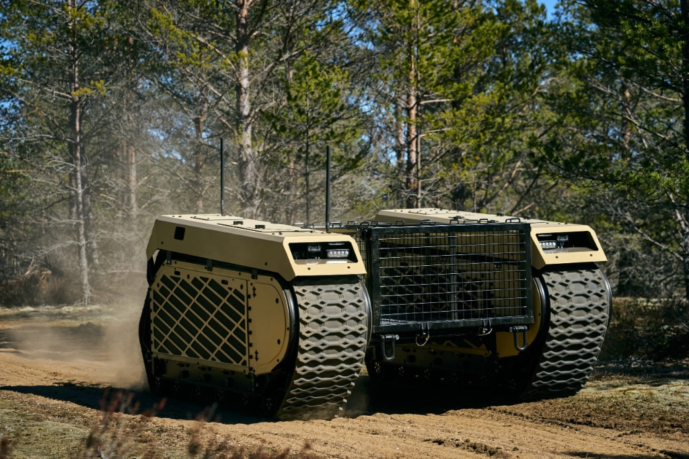

Wherever the road ends, work begins.
TrXon ships as one stack. The terrain — and the impact — changes with the industry.
Feeding 500M+ farmers, season after season.
Today's autonomous tractors hand back control the moment the field gets muddy or weather rolls in. TrXon keeps the machine working — through the night, through the rain, across uneven ground. At scale, that means cheaper food and fewer wasted hours in the planting and harvest windows.

Out of the cab, out of the danger zone.
Mining is the highest-fatality industry on earth. Autonomous haul trucks are the future, but current systems require carefully geofenced, pre-mapped sites. TrXon extends autonomy into pits where the ground itself changes daily — letting operators run faster, longer, with humans further from harm.

Inside the 72-hour survival window.
When buildings collapse, the first 72 hours decide who lives. Today, responders can't safely enter the rubble zone fast enough. TrXon enables autonomous ground robots to traverse unstable debris — searching, mapping, and reaching survivors while every minute still counts.
